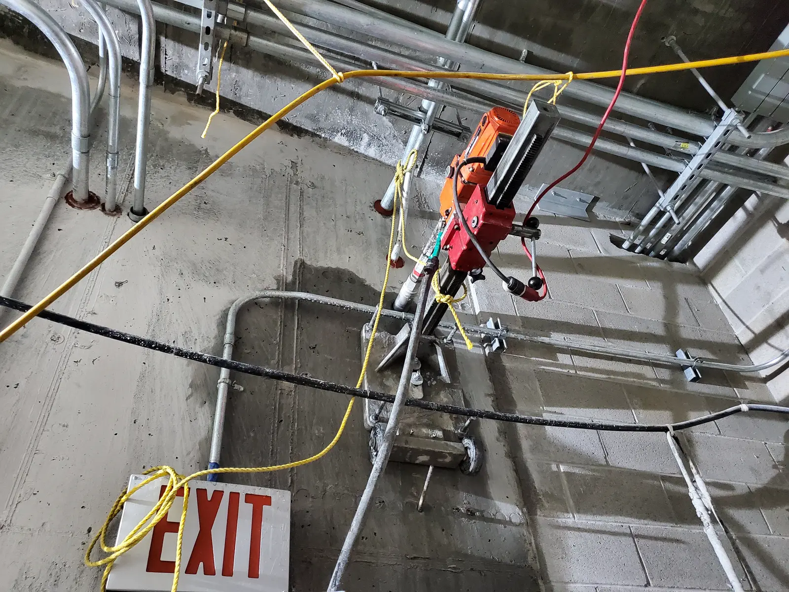

ダイヤモンドコアは打撃破砕を避けたい削孔作業で候補になります。しかし作動音はあり、稼働中の授業・診療に影響がないとは断定できません。時間帯や施設用途の調整が第一です。
住宅街・病院周辺の騒音と振動対策：打撃・切断・削孔・圧砕を比較する ↗
稼働中の施設で起こりやすい問題
- 音：削孔機・集じん機・発電機・搬入時の作業音
- 振動：精密機器、患者・児童の活動への影響
- 粉じんと臭気：給排気、空調設備や使用空間への侵入
- 排水：湿式削孔の水やスラリー、床・階下への漏水
- 動線：利用者と作業員・搬入車両の交錯
「低騒音工法」を選ぶ前に決めること
| 確認事項 | 具体的な打合せ |
|---|---|
| 作業可能時間 | 授業・試験・診療・検査・休憩などの時刻表 |
| 必要な開口 | 径・深さ・数量・位置・貫通先・配筋 |
| 作業環境 | 養生、給水・集水、電源、換気、避難動線 |
| 作業の分割 | 騒音が出る工程を休校日・休日・利用の少ない時間へ移す |
| 事前確認 | 施設管理者との試験施工・実測・周知計画 |
コア削孔を使う場合の利点と制約
配管や電気設備の更新で躯体貫通が必要な場合、コア削孔は比較的小さく正確な開口を計画でき、打撃による破砕を減らす選択肢です。ただし、水が使えない室内、機材の固定が難しい場所、配筋や設備埋設のリスクが高い場所では別の検討が必要です。
「授業中でも問題ない」「診療中も無音で施工できる」という表現は適切ではありません。実際の作業音や振動は機種・躯体・周辺環境で変わります。必要に応じて施設管理者と試験施工・事前測定・時間帯変更を検討してください。
工事を「音の性質」で工程分解する
コア削孔自体は打撃工具とは異なる音の出方ですが、資材荷下ろし、機械固定、アンカー設置、発電機、コンクリート片の搬出には別の音が生じます。「穴をあける時間」だけでなく、準備と撤収を含めて施設側と共有しましょう。病院では検査・処置や精密機器の稼働、学校では試験や放送、行事などが特に重要です。
現場監督と施設管理者の役割分担
| 段階 | 施工側の確認 | 施設側の確認 |
|---|---|---|
| 着工前 | 図面・配筋・貫通先・設備調査 | 立入禁止範囲・使用不可時間 |
| 作業前 | 集水・養生・配線・停止連絡先 | 利用者動線・緊急避難路 |
| 作業中 | 漏水・粉じん・騒音を監視 | 影響発生時の連絡・中断判断 |
| 完了時 | 清掃・設備復旧・貫通部処理 | 使用再開前の安全確認 |
湿式工事の「下の階」まで考える
コア削孔で使う水とスラリーは、直下の天井裏・設備・仕上げに影響する場合があります。貫通側の受け容器、貫通孔の密閉、漏電対策、空調吸込口の位置を事前確認。水処理が確保できない場合は、別方式や休館時施工へ切り替える判断が必要です。
判断の基準：「施工できるか」ではなく「その時間・その場所で施設を安全に使い続けられるか」を管理者と合意できるかどうかです。
工事前の調整例（計画のひな形）
- 施設管理者：使えない時間帯、立入禁止範囲、特に静けさが必要な行事を共有。
- 元請・設備担当：機械搬入、貫通位置、電源と水の使用範囲を図面で確認。
- 専門工事会社：施工順、養生方法、音と振動が出る工程、リスク時の中止判断を説明。
- 当日：施設側との連絡先と緊急時の停止手順を明確にする。
測定値や作業可能時間は施設の条件で異なります。「低騒音」という工法名称だけで時間帯を決めないことが肝心です。
既存建材の撤去・穿孔などを伴う改修では、施工者に対象材料の石綿事前調査が必要となる場合があります。厚生労働省は、改修対象箇所の材料を工事の規模・種類にかかわらず原則調査し、有資格者による事前調査を案内しています。建築物と工作物では資格要件が異なり、2026年1月1日以降に着工する一部の工作物改修では「工作物石綿事前調査者」による事前調査が必要です。対象範囲と着工日は、厚生労働省の資格者案内で確認してください。施設側は図面等を提供し、調査範囲・結果と必要な対策を着工前に施工者と確認してください。施工業者向け手続き案内 ／ 発注者・施主向け案内
施工方法の検討を進めるには
開口の径・数量・躯体厚、配筋・設備埋設、施設の利用時間、集水・養生条件を整理し、元請・設備担当・専門業者で比較することが重要です。施設管理者と設計・施工責任者の調整を前提にしてください。